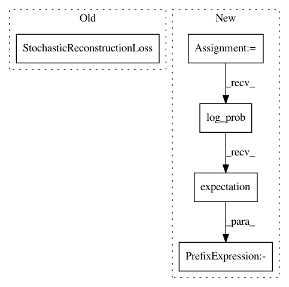

1b7eb4148747bd674e15adfa1b3851f0406c356d,pixyz/models/vae.py,VAE,__init__,#VAE#Any#Any#Any#Any#Any#Any#Any#Any#,20
Before Change
// set losses
reconstruction =\
StochasticReconstructionLoss(encoder, decoder)
loss = (reconstruction + regularizer).mean()
super().__init__(loss, test_loss=loss,
distributions=distributions,
After Change
distributions = [encoder, decoder] + tolist(other_distributions)
// set losses
reconstruction = -decoder.log_prob().expectation(encoder)
loss = (reconstruction + regularizer).mean()
super().__init__(loss, test_loss=loss,
distributions=distributions,
In pattern: SUPERPATTERN
Frequency: 3
Non-data size: 5
Instances
Project Name: masa-su/pixyz
Commit Name: 1b7eb4148747bd674e15adfa1b3851f0406c356d
Time: 2020-01-19
Author: kaneko@weblab.t.u-tokyo.ac.jp
File Name: pixyz/models/vae.py
Class Name: VAE
Method Name: __init__
Project Name: masa-su/pixyz
Commit Name: 99a7406291265397b453ffb7f7c148e58ed68f47
Time: 2020-01-13
Author: kaneko@weblab.t.u-tokyo.ac.jp
File Name: pixyz/models/vae.py
Class Name: VAE
Method Name: __init__
Project Name: masa-su/pixyz
Commit Name: fff851153ed5090a34c23b384b78eadcb1839fd2
Time: 2020-03-02
Author: kaneko@weblab.t.u-tokyo.ac.jp
File Name: pixyz/models/vae.py
Class Name: VAE
Method Name: __init__